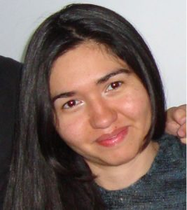
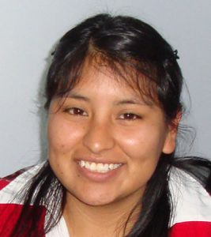

Nuestro Equipo
Docentes, investigadores y estudiantes que forman parte del LCG.
Investigadores
Roberto Guerrero
Es Magíster en Ciencias de la Computación y profesor en la Universidad Nacional de San Luis, San Luis. Actualmente, trabaja en su Tesis Doctoral acerca de Realidad Virtual e Interfaces Naturales para No-Fotorealismo. Sus áreas de investigación involucran Computación Gráfica, Procesamiento de Imágenes, No-Fotorealismo, Realidad Virtual, Realidad Aumentada, Dispositivos Hapticos, e Interfaces Gráficas.
Jacqueline Fernandez
Es Licenciada en Ciencias de la Computación y profesora en la Universidad Nacional de San Luis, San Luis. Su tareas actuales se encuentran enfocadas en sus tesis de Maestría en Realidad Virtual e Interfaces Naturales aplicadas a entornos educativos. Entre sus áreas de investigación se encuentran Computación Gráfica, Realidad Virtual, Realidad Aumentada, Dispositivos Hápticos, Interfaces Gráficas.

Yoselie Alvarado
Es Licenciada en Ciencias de la Computación y Auxiliar Docente en la Universidad Nacional de San Luis, San Luis. Actualmente, se encuentra finalizando su tesis de Maestría e iniciando un Doctorado mediante una Beca Doctoral Conicet, ambas sobre Agentes Conversacionales en entornos inmersivos tipo Cave. Sus principales áreas de investigación son Computación Gráfica, Realidad Virtual Inmersiva, Agentes Encarnados, Comunicación Oral entre Humano y Computadora e Interfaces Gráficas.
Nicolás Jofré
Es Licenciado en Ciencias de la Computación y es Auxiliar Docente en la Universidad Nacional de San Luis, San Luis. Recientemente, ha presentado su trabajo final de carrera en el cuál desarrolló una Interfaz Natural para Realidad Virtual utilizando el dispositivo Kinect. Sus áreas de interes son Computación Gráfica, Realidad Virtual, Realidad Aumentada, Dispositivos Hapticos e Interfaces Gráficas.

Graciela Rodríguez
Es Licenciada en Ciencias de la Computación y Auxiliar Docente en la Universidad Nacional de San Luis, San Luis. En este momento, se encuentra trabajando en su Maestría la cual consiste en Realidad Virtual e Interfaces Naturales por medio de personajes no conversacionales. Sus áreas de interes son Computación Gráfica, Realidad Virtual, Realidad Aumentada, Dispositivos Hapticos, e Interfaces Gráficas.